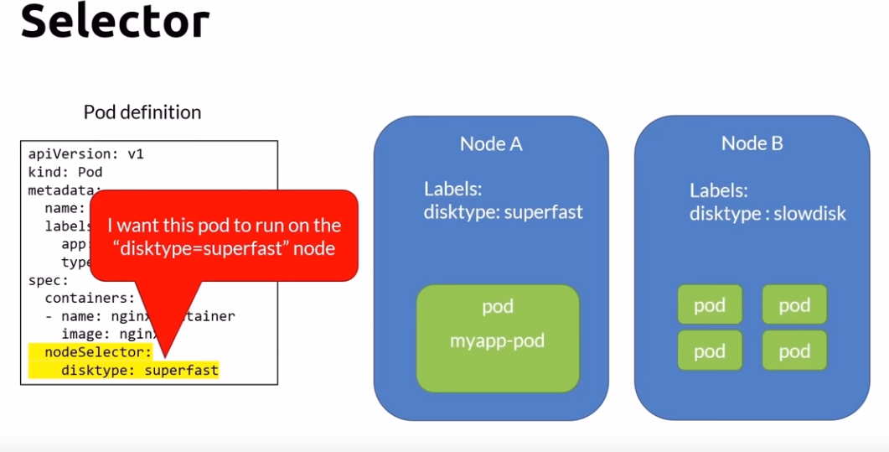

Labels and Selectors
Labels are key/value pairs that are attached to objects, such as pods. Labels are intended to be used to specify identifying attributes of objects that are meaningful and relevant to users, but do not directly imply semantics to the core system. Labels can be used to organize and to select subsets of objects. Labels can be attached to objects at creation time and subsequently added and modified at any time. Each object can have a set of key/value labels defined. Each Key must be unique for a given object.
"metadata": { "labels": { "key1" : "value1", "key2" : "value2" , "diskType": "superFast" } }
labels can be referenced by nodeSelector or selector attribute
